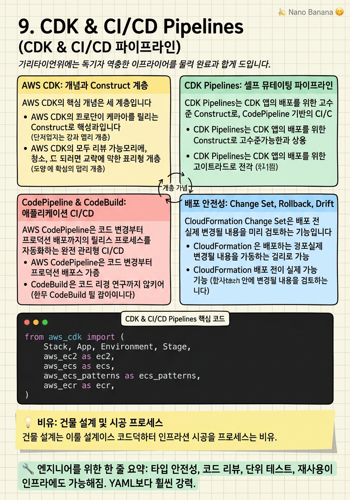

CDK & CI/CD Pipelines

🎯 학습 목표
- CDK Construct Library로 재사용 가능한 인프라 컴포넌트를 설계할 수 있다
- CDK Pipelines로 멀티 스테이지 배포 파이프라인을 구축할 수 있다
- CloudFormation Change Set으로 안전한 배포를 검증할 수 있다
- GitOps 원칙으로 인프라 변경 이력을 추적할 수 있다
- 배포 실패 시 자동 롤백 메커니즘을 설계할 수 있다
인프라를 수동으로 클릭해서 만드는 시대는 지났습니다. Infrastructure as Code(IaC)는 인프라 정의를 코드로 작성하여 버전 관리, 코드 리뷰, 자동 테스트, 자동 배포의 혜택을 인프라에도 적용합니다.
AWS CDK(Cloud Development Kit)는 Python, TypeScript, Java 등 익숙한 프로그래밍 언어로 AWS 인프라를 정의하는 오픈소스 프레임워크입니다. CDK는 코드를 CloudFormation 템플릿으로 합성(synth)하고, CloudFormation이 실제 AWS 리소스를 프로비저닝합니다. YAML 중심의 CloudFormation 직접 작성보다 타입 안전성, 재사용 가능한 컴포넌트(Construct), IDE 자동 완성의 이점이 있습니다.
이 챕터에서는 CDK의 핵심 개념(App, Stack, Construct), CDK Pipelines로 자동화된 멀티 스테이지 배포, CodePipeline과 CodeBuild를 활용한 애플리케이션 CI/CD, 그리고 프로덕션 배포의 안전성을 보장하는 패턴을 다룹니다.
핵심 내용
AWS CDK: 개념과 Construct 계층
AWS CDK의 핵심 개념은 세 계층입니다.
App은 CDK 애플리케이션의 루트입니다. 하나의 App은 여러 Stack을 포함합니다.
Stack은 CloudFormation Stack에 매핑됩니다. 배포의 단위이며, Stack 간 의존성을 설정할 수 있습니다.
Construct는 하나 이상의 AWS 리소스를 표현하는 재사용 가능한 컴포넌트입니다.
Construct에는 세 레벨이 있습니다.
- L1 (Cfn): CloudFormation 리소스와 1:1 매핑. 가장 낮은 수준. CfnBucket
- L2: 안전한 기본값과 편의 메서드가 있는 고수준 Construct. Bucket, Function, Table
- L3 (Patterns): 여러 L2 Construct를 조합한 완전한 패턴. ApplicationLoadBalancedFargateService
CDK Construct Library에서 커뮤니티와 파트너가 만든 고품질 Construct를 가져와 사용합니다. Datadog CDK Construct, Serverless Land 등이 대표적입니다.
cdk diff로 배포 전 변경사항을 미리 확인하고, cdk synth로 생성된 CloudFormation 템플릿을 검사합니다.
CDK Pipelines: 셀프 뮤테이팅 파이프라인
CDK Pipelines는 CDK 앱의 배포를 위한 고수준 Construct로, CodePipeline 기반의 CI/CD 파이프라인을 CDK로 정의합니다.
CDK Pipelines의 핵심 특징은 셀프 뮤테이팅(Self-Mutating)입니다. 파이프라인 정의 자체가 변경되면, 파이프라인이 먼저 자신을 업데이트한 후 나머지 스테이지를 계속 진행합니다. 파이프라인 구성 변경에 별도 처리가 필요 없습니다.
배포 스테이지 구조: Source(GitHub) → Build(CDK Synth) → UpdatePipeline → Assets → [Dev Stage] → [Staging Stage] → [Prod Stage] 순으로 진행합니다.
스테이지 간 승인: 스테이징에서 프로덕션으로 배포 전 수동 승인 단계를 추가합니다. ManualApprovalStep으로 SNS 이메일 승인 또는 Slack 승인 워크플로우를 연동합니다.
Wave 배포: 프로덕션 다중 리전에 순차적으로 배포할 때 Wave를 사용합니다. 각 Wave 사이에 관찰 기간을 두고, CloudWatch 알람 상태를 확인합니다.
CodePipeline & CodeBuild: 애플리케이션 CI/CD
AWS CodePipeline은 코드 변경부터 프로덕션 배포까지의 릴리스 프로세스를 자동화하는 완전 관리형 CI/CD 서비스입니다.
소스: GitHub(OIDC 연동), CodeCommit, S3, ECR 변경 이벤트로 파이프라인이 트리거됩니다.
CodeBuild: 관리형 빌드 서비스입니다. buildspec.yml로 빌드 명령어를 정의합니다. Docker 이미지 빌드, 테스트 실행, Snyk/SAST 보안 스캔, CDK Synth를 모두 CodeBuild에서 실행합니다.
병렬 액션: 하나의 스테이지에서 여러 액션을 병렬로 실행합니다. 단위 테스트, 통합 테스트, 보안 스캔을 동시에 실행하여 파이프라인 시간을 단축합니다.
ECS Blue/Green 배포: CodeDeploy와 연동하여 ALB Target Group 전환 방식의 Blue/Green 배포를 CodePipeline에서 자동화합니다.
파이프라인 메트릭: 배포 빈도(Deployment Frequency), 변경 실패율(Change Failure Rate), 복구 시간(MTTR), 변경 리드 타임(Lead Time)을 CloudWatch에 발행하여 DORA 메트릭을 추적합니다.
배포 안전성: Change Set, Rollback, Drift
CloudFormation Change Set은 배포 전 실제 변경될 내용을 미리 검토하는 기능입니다. 삭제(REMOVE)나 교체(REPLACE)가 예상되는 리소스를 사전에 확인하여 의도치 않은 데이터 소실을 방지합니다.
Deletion Policy는 CloudFormation Stack이 삭제될 때 해당 리소스를 어떻게 처리할지 지정합니다. Retain은 리소스를 보존합니다. Snapshot은 RDS·EBS·ElastiCache의 스냅샷을 찍고 삭제합니다. 프로덕션 DB에는 항상 Retain 또는 Snapshot을 설정해야 합니다.
자동 롤백: CloudFormation 배포 실패 시 이전 상태로 자동 롤백됩니다. 롤백 중에도 실패하면 Stack이 ROLLBACK_FAILED 상태가 됩니다. 이 경우 수동 개입이 필요합니다.
CloudFormation Drift Detection은 실제 AWS 리소스 상태와 CloudFormation 템플릿의 차이를 감지합니다. 수동으로 콘솔에서 변경한 리소스는 Drift 상태가 됩니다. 주기적 Drift 감지로 인프라 일관성을 유지합니다.
cdk-nag는 CDK 앱에 대한 보안 규정 준수 검사 라이브러리입니다. 배포 전 AWS Security Hub 표준(NIST, CIS)에 따른 위반 사항을 코드 수준에서 탐지합니다.
GitOps와 IaC 거버넌스
GitOps는 Git 저장소를 인프라의 단일 진실 소스(Single Source of Truth)로 사용하는 운영 모델입니다. 모든 인프라 변경은 Git 커밋·PR·코드 리뷰를 통해 이루어지며, 파이프라인이 Git 상태를 실제 인프라에 자동 동기화합니다.
IaC 저장소 구조:
`
infra/
bin/app.ts # CDK App 진입점
lib/
stacks/ # Stack 정의
constructs/ # 재사용 Construct
test/ # CDK Unit Test
cdk.json
buildspec.yml
`
CDK Unit Test는 aws-cdk-lib/assertions 모듈로 합성된 CloudFormation 템플릿을 검사합니다. 보안 그룹에 0.0.0.0/0 인바운드가 없는지, S3 버킷 암호화가 설정됐는지 등을 테스트합니다.
Aspect는 CDK 앱의 모든 Construct에 횡단 관심사를 적용합니다. 예: 모든 S3 버킷에 자동으로 암호화 설정, 모든 Lambda에 X-Ray 활성화, 모든 IAM Role에 경계 정책 적용.
💡 비유로 이해하기
CDK와 CI/CD 파이프라인을 건물 설계·시공에 비유해봅시다. CDK 코드는 건축 설계도입니다. 도면(CDK 코드) 한 장에서 동일한 건물(인프라)을 어디서든 재현할 수 있습니다. Construct는 표준 부품 카탈로그입니다. "공인된 내진 설계 벽체"처럼 검증된 컴포넌트를 재사용합니다.
CI/CD 파이프라인은 설계부터 시공까지의 품질 관리 프로세스입니다. 도면 제출(PR) → 구조 안전 검토(테스트) → 감리 승인(코드 리뷰) → 단계별 시공(Dev→Staging→Prod) → 준공 검사(스모크 테스트). 모든 단계가 자동화되어 있습니다.
Change Set은 공사 전 변경 영향 평가서입니다. "이 기둥을 교체하면 3층 이상 천장이 무너집니다"(RDS REPLACE)처럼 위험한 변경사항을 공사 전에 파악합니다. Deletion Policy: Retain은 건물을 허물어도 금고는 그대로 남겨두는 것입니다.
💻 코드 예시
AWS CDK Python으로 VPC·ECS Fargate Service·ALB를 포함한 완전한 Stack과 CDK Pipelines 배포를 구현하는 예제입니다.
from aws_cdk import (
Stack, App, Environment, Stage,
aws_ec2 as ec2,
aws_ecs as ecs,
aws_ecs_patterns as ecs_patterns,
aws_ecr as ecr,
)
from aws_cdk.pipelines import CodePipeline, CodePipelineSource, ShellStep, ManualApprovalStep
from constructs import Construct
# 1. 재사용 가능한 Web Service Construct
class WebServiceConstruct(Construct):
def __init__(self, scope, id: str, *, vpc: ec2.Vpc, image_tag: str, **kwargs):
super().__init__(scope, id, **kwargs)
cluster = ecs.Cluster(self, 'Cluster', vpc=vpc)
repo = ecr.Repository.from_repository_name(self, 'Repo', 'my-web-app')
# ALB Fargate Service — L3 Construct가 ALB + ECS + IAM을 한번에 생성
self.service = ecs_patterns.ApplicationLoadBalancedFargateService(
self, 'Service',
cluster=cluster,
memory_limit_mib=1024,
cpu=512,
desired_count=3,
task_image_options=ecs_patterns.ApplicationLoadBalancedTaskImageOptions(
image=ecs.ContainerImage.from_ecr_repository(repo, tag=image_tag),
container_port=8080,
environment={'ENV': 'production'}
),
# Blue/Green 배포를 위해 CodeDeploy 연동
deployment_controller=ecs.DeploymentController(
type=ecs.DeploymentControllerType.CODE_DEPLOY
)
)
# 헬스체크 경로 설정
self.service.target_group.configure_health_check(path='/health')
# 2. Application Stage (Dev / Prod 공통 정의)
class AppStage(Stage):
def __init__(self, scope, id: str, *, image_tag: str, **kwargs):
super().__init__(scope, id, **kwargs)
stack = Stack(self, 'AppStack')
vpc = ec2.Vpc(stack, 'Vpc', max_azs=2)
WebServiceConstruct(stack, 'WebService', vpc=vpc, image_tag=image_tag)
# 3. CDK Pipeline Stack
class PipelineStack(Stack):
def __init__(self, scope: App, id: str, **kwargs):
super().__init__(scope, id, **kwargs)
pipeline = CodePipeline(self, 'Pipeline',
pipeline_name='MyAppPipeline',
synth=ShellStep('Synth',
input=CodePipelineSource.git_hub('my-org/my-repo', 'main',
authentication=cdk.SecretValue.secrets_manager('github-token')
),
commands=[
'pip install -r requirements.txt',
'npm install -g aws-cdk',
'cdk synth'
]
)
)
# Dev 배포
pipeline.add_stage(AppStage(self, 'Dev',
env=Environment(account='111111111111', region='ap-northeast-2'),
image_tag='latest'
))
# Prod 배포 (수동 승인 후)
pipeline.add_stage(
AppStage(self, 'Prod',
env=Environment(account='222222222222', region='ap-northeast-2'),
image_tag='latest'
),
pre=[ManualApprovalStep('ApproveProduction')]
)
app = App()
PipelineStack(app, 'PipelineStack',
env=Environment(account='000000000000', region='ap-northeast-2')
)
app.synth()WebServiceConstruct는 L2/L3 Construct로 ALB·ECS·IAM을 묶은 재사용 가능한 컴포넌트입니다. ApplicationLoadBalancedFargateService(L3)가 NLB, Target Group, Task Definition, Service, IAM Role까지 자동 생성합니다. AppStage에 환경별 설정을 주입하면 같은 코드로 Dev/Prod 인프라를 생성합니다. ManualApprovalStep('ApproveProduction')이 Prod 배포 전 승인 게이트를 추가합니다. CDK Pipelines는 코드 변경 시 파이프라인 자체도 자동 업데이트합니다.
🏭 현업에서의 평가
✅ 시니어가 보는 것
- CDK Construct 계층(L1/L2/L3)의 적절한 선택 근거
- CDK Unit Test로 보안 정책을 코드 수준에서 검증
- CloudFormation Change Set으로 파괴적 변경 사전 감지
- 멀티 계정 파이프라인에서 크로스 계정 IAM 역할 설계
- cdk-nag로 보안 규정 준수 자동화
⚠️ 레드 플래그
- CDK 없이 CloudFormation YAML을 직접 작성 — 재사용 불가, 오류 발생 쉬움
- 테스트 없는 CDK 코드 — 배포 전 버그 탐지 불가
- 파이프라인 없이 로컬에서 cdk deploy — 감사 추적 불가
- 모든 리소스를 하나의 거대한 Stack에 — CloudFormation 500개 리소스 제한 초과 및 배포 시간 증가
🎤 예상 인터뷰 질문
- CDK 코드 변경이 기존 RDS 인스턴스를 교체(Replace)할 것을 발견했습니다. 어떻게 처리하겠습니까?
- 10개 팀이 각자의 CDK 인프라를 배포하는 환경에서 보안 정책을 일관되게 적용하는 방법은?
- CDK L2 Construct 대신 L1을 사용해야 하는 경우는 언제인가요?
✨ 핵심 요약
CDK = 인프라에 소프트웨어 개발 Best Practice 적용
타입 안전성, 코드 리뷰, 단위 테스트, 재사용이 인프라에도 가능해짐. YAML보다 훨씬 강력.
Construct 계층을 이해하고 적절히 선택
L3로 시작하고, 부족하면 L2, 극단적 커스텀이 필요할 때만 L1. L3 = 완전한 패턴.
CDK Pipelines의 셀프 뮤테이팅이 핵심
파이프라인 정의가 변경되면 파이프라인이 자신을 먼저 업데이트. 파이프라인 관리 오버헤드 제거.
Change Set으로 파괴적 변경을 배포 전에 잡아라
REPLACE 또는 DELETE 예상 리소스를 Change Set으로 확인. 데이터 소실 사고 방지의 첫 번째 방어선.
Deletion Policy: Retain은 DB의 필수 설정
Stack 삭제 시 DB가 자동 삭제되는 사고 방지. 프로덕션 모든 DB에 Retain 또는 Snapshot 설정.
cdk-nag로 보안을 코드 리뷰 단계에서 강제
배포 전에 CIS/NIST 위반을 탐지. 보안 게이트를 파이프라인에 내장.
Stack을 도메인별로 분리
하나의 거대한 Stack 대신 네트워크·보안·애플리케이션 Stack을 분리. CloudFormation 한도 초과 방지 및 배포 속도 향상.
DORA 메트릭을 파이프라인에서 추적
배포 빈도, 리드 타임, 변경 실패율, MTTR을 CodePipeline 이벤트에서 자동 수집. 엔지니어링 효율 데이터.